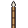
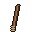
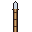
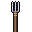
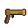

ARMORY
Sandatahan
Everything carried, worn, wielded and hoarded across the islands.
Sandata · Weapons
Blades, spears, bows and powder. The islands arm themselves with what the forest, the forge and the sea provide.
Simple Melee
| Name | Cost | Damage | Weight | Properties | Mastery |
|---|---|---|---|---|---|
 Bagakay spear | 5 sp | 1d6 piercing | 2 lb | Thrown | Slow |
This basic spear is made from a piece of bamboo, with a fire-hardened wooden point. The last segment of this commonly spear [sic] is loaded with sand to act as a counterbalance when thrown. Islands of Sina Una, p.206 | |||||
| Baladaw | 2 gp | 1d4 piercing | 1 lb | Finesse, Light, Thrown | Nick |
This dagger is recognized by its single-edged, leaf-like blade and distinctive cross-shaped hilt. Islands of Sina Una, p.206 | |||||
| Bangkaw | 3 gp | 1d8 piercing | 3 lb | Two-Handed, Special | Topple |
Used in for both [sic] ceremony and protection, the head of this spear can be removed and used as a short blade. The shaft is usually made of bamboo or hardwood. Islands of Sina Una, p.206 | |||||
 Baston | 1 sp | 1d4 bludgeoning | 2 lb | Light | Slow |
A short stick of seasoned rattan, light enough to carry one in each hand. Fighters drill with them in paired forms, and a baston that splinters is replaced from the nearest thicket. Not in the book Written for this site because the sourcebook has no entry for this item. The rattan fighting stick is indigenous; the name is a Spanish loanword, a caveat Ponch accepted explicitly. Added to fill the 1d4 Light bludgeoning slot vacated by Club and Light hammer. WEAPONS-PLAN.md, ruling of 2026-07-28. | |||||
| Bolo | 1 gp | 1d4 slashing | 1 lb | Light | Nick |
Though these large knives are typically used for woodcutting or clearing vegetation, some individuals have been known to incorporate them into their martial arts. A bolo is very similar to a machete in construction, with a large wide blade made for cutting through overgrowth. Islands of Sina Una, p.206 | |||||
| Kris | 10 gp | 1d6 slashing | 2 lb | Finesse, Light | Vex |
The kris is a double-edged shortsword characterized by the blade's asymmetrical flare at the hilt end. Most kris have a distinctive wavy silhouette, though there are varieties with straight blades. Islands of Sina Una, p.206 | |||||
 Sugob | 5 sp | 1d6 piercing | 2 lb | Thrown | Push |
A javelin cut from sharpened bagakay bamboo, its hollow compartments packed with sand so the shaft carries its own weight into the throw. The added mass is the whole point of the design: a sugob arrives hard enough to move what it hits. Not in the book Written for this site because the sourcebook has no entry for this item. Attested and pre-colonial: a javelin of sharpened bagakay bamboo with compartments filled with sand to add throwing weight. Note the book gave this javelin profile to its Bagakay spear entry, while the sources describe the real bagakay as a six to ten inch dart. Both entries are kept as printed. WEAPONS-PLAN.md, ruling of 2026-07-28. | |||||
| Tungkod | 2 sp | 1d6 bludgeoning | 4 lb | Versatile (1d8) | Topple |
The tungkod is a hardwood staff, cut longer and from denser wood than the walking sticks sold in most villages. Held at one end it sweeps a leg out from under an opponent, and taken in both hands it strikes with the full weight of the shaft. Not in the book Written for this site because the sourcebook has no entry for this item. Tungkod is Tagalog for staff or walking cane. The object is already in-setting: the book sells a Walking Stick for 5 sp on p.208. Added by this project to fill the Quarterstaff slot. WEAPONS-PLAN.md Part 4, row 1. | |||||
Simple Ranged
| Name | Cost | Damage | Weight | Properties | Mastery |
|---|---|---|---|---|---|
| Busog | 25 gp | 1d6 piercing | 2 lb | Ammunition (Arrow), Two-Handed | Vex |
The busog is the islands' equivalent of a shortbow. Though most prefer stronger harpoons for ranged combat, some seafarers have trained to use the busog in naval warfare, raining down volleys of arrows onto enemy ships. Islands of Sina Una, p.206 | |||||
| Kalawit | 10 gp | 1d4 piercing | 1 lb | Harpoon, Thrown | Slow |
Commonly used as a fishing implement, the kalawit is a lighter harpoon with a barbed tip like an arrowhead. Islands of Sina Una, p.207 | |||||
| Tirador | 1 sp | 1d4 bludgeoning | 0 lb | Ammunition (Stone bullet) | Slow |
A forked frame of hardwood strung with elastic cord, used to send a stone bullet at small game or an unwary sentry. It weighs nothing and costs almost nothing. Not in the book Written for this site because the sourcebook has no entry for this item. CAVEAT, accepted knowingly by Ponch: the tirador is a Y-frame slingshot with rubber or elastic bands, which makes it firmly modern, and the name is Spanish-derived. It is the recognisable Filipino sling-type weapon but it is not pre-colonial. No cord-and-pouch sling term surfaced in any source. This is the first entry to revisit if period accuracy ever outweighs recognisability. It feeds the Stone bullets already printed on p.208. | |||||
Martial Melee
| Name | Cost | Damage | Weight | Properties | Mastery |
|---|---|---|---|---|---|
| Al-o | 2 sp | 1d8 bludgeoning | 10 lb | Versatile (1d10) | Push |
The al-o is the long hardwood pestle that stands in every household beside its lusong mortar, used to husk rice. It was never made as a weapon, but ten pounds of ironwood swung in both hands does not much care what it was made for. Not in the book Written for this site because the sourcebook has no entry for this item. The heavy hardwood pestle paired with a lusong mortar, universal in pre-colonial Philippine households and a documented improvised weapon in Filipino martial tradition. Confidence is HIGH as an object and only MODERATE as a battlefield weapon, which WEAPONS-PLAN.md Part 4 row 2 records explicitly. | |||||
| Barong | 20 gp | 1d8 slashing | 4 lb | Versatile (1d10) | Graze |
A heavy leaf-shaped blade, single-edged and thick through the spine, widest across its middle. The barong is a chopping sword rather than a thrusting one, and its weight does most of the work. Not in the book Written for this site because the sourcebook has no entry for this item. Tausug and Sulu leaf-shaped sword: thick, heavy, single-edged, and known as a chopping weapon. WEAPONS-PLAN.md Part 4, row 5, confidence high. | |||||
| Budjak | 30 gp | 1d10 piercing | 6 lb | Heavy, Reach, Two-Handed | Push |
The budjak is the long spear of the western islands, matching a bangkaw in length but built heavier throughout. It is used to hold an enemy at the far end of its reach and drive them backward. Not in the book Written for this site because the sourcebook has no entry for this item. Also budiak or bodjak. The Moro spear of western Mindanao and the Sulu Archipelago, described in the sources as the same length as a Visayan bangkaw but heavier. Surviving 19th century examples run to 67 inches, unambiguously polearm length. WEAPONS-PLAN.md, ruling of 2026-07-28, which cites Wikipedia Sibat, IMA-USA and FMA Pulse. | |||||
| Bunang | 25 gp | 1d8 slashing | 4 lb | Special, Two-Handed | Graze |
Also known as the headhunter axe, the bunang features a sharp hooked cutting edge with a vicious point on the butt of the axehead. Islands of Sina Una, p.207 | |||||
| Bunang, back point: Bonus Action after the Attack action with a bunang; no ability modifier to damage (1d6 piercing) | |||||
| Coral-tipped spear | 5 gp | 1d6 piercing | 2 lb | Salt-imbued, Thrown | Sap |
The head of this spear is carved from a large piece of salvaged coral. Islands of Sina Una, p.207 | |||||
| Kalis | 25 gp | 1d8 slashing | 3 lb | Finesse | Sap |
The kalis is the sword-length relative of the kris, carrying the same asymmetric flare at the hilt on a blade long enough to fight at full extension. Some are waved along their length and some are straight, and a good one is balanced to be led by the point. Not in the book Written for this site because the sourcebook has no entry for this item. Moro sword, the sword-length relative of the kris, with a wavy or straight blade and an asymmetric hilt. Distinct from the book's Kris entry, which is statted as a light finesse blade. WEAPONS-PLAN.md Part 4, row 4, confidence high. | |||||
| Kampilan | 15 gp | 1d8 slashing | 3 lb | Versatile (1d10) | Sap |
The kampilan is a single-edged longsword. Its straight blade grows much broader and thinner at its point, and some feature a forked tip. Islands of Sina Una, p.207 | |||||
| Panabas | 30 gp | 1d10 slashing | 6 lb | Heavy, Versatile (1d12) | Cleave |
The panabas appears as a cross between a scimitar and an axe, with a large curved blade that grows thicker at its tip and a long handle for leverage. It is equally used both as a martial weapon and as a tool to cleave paths through dense areas of forest. Islands of Sina Una, p.207 | |||||
 Sarapang | 5 gp | 1d6 piercing | 4 lb | Thrown, Versatile (1d8) | Topple |
Used for fishing, the sarapang is a spear with three or more prongs. Islands of Sina Una, p.207 | |||||
| Songil | 20 gp | 2d6 piercing | 2 lb | Finesse | Vex |
The songil is widely regarded as the most dangerous type of spear in the islands. The metal spearhead is nearly a foot in length and painstakingly sharpened on both edges. Islands of Sina Una, p.207 | |||||
| Stingray tail whip | 3 gp | 1d4 slashing | 3 lb | Finesse, Reach, Salt-imbued | Slow |
A favored weapon among aswang hunters, this whip is crafted from the barbed tail of a stingray, though it no longer carries the ray's venom. Islands of Sina Una, p.207 | |||||
| Wasay | 5 gp | 1d6 slashing | 2 lb | Light, Thrown | Vex |
The wasay is the working axe of the islands, used to fell timber and shape a hull as readily as to fight. Its head is small and its haft short, so it can be thrown or kept in the off hand. Not in the book Written for this site because the sourcebook has no entry for this item. Visayan and Cebuano for axe, serving as both woodcutting and war axe. WEAPONS-PLAN.md Part 4, row 3, confidence high. | |||||
Martial Ranged
| Name | Cost | Damage | Weight | Properties | Mastery |
|---|---|---|---|---|---|
 Astinggal | 75 gp | 1d10 piercing | 7 lb | Ammunition (Stone bullet), Heavy, Loading | Slow |
This matchlock firearm has a distinctly long barrel, which houses a small bullet that is launched via gunpowder. Islands of Sina Una, p.207 | |||||
| Bontal | 25 gp | 1d10 piercing | 3 lb | Harpoon, Thrown | Push |
The bontal is a heavier harpoon commonly used for hunting large sea mammals, like dugong. Islands of Sina Una, p.207 | |||||
| Lantaka | 100 gp | 2d8 piercing | 10 lb | Ammunition (Stone bullet), Heavy, Loading, Two-Handed | Push |
These hand cannons are typically made from large segments of bamboo, though more decorative varieties are forged out of bronze. Ammunition—typically an arrow or a large stone—is loaded into the barrel and propelled with gunpowder. Islands of Sina Una, p.207 | |||||
| Pana | 50 gp | 1d8 piercing | 2 lb | Ammunition (Arrow), Two-Handed, Heavy | Slow |
The pana is the long bow, taller than a busog and drawn to the ear, throwing an arrow far past the shorter bow's reach. It takes both hands and a braced stance to shoot well. Not in the book Written for this site because the sourcebook has no entry for this item. Busog and pana are regional synonyms for bow in the same way kris and kalis are for the blade. The short bow and long bow split is a game convention, not a linguistic one. Added to restore the only long-range bow in the setting, which the Busog at 80/320 cannot cover. WEAPONS-PLAN.md, ruling of 2026-07-28. | |||||
| Sumpit | 50 gp | 1d8 piercing | 1 lb | Ammunition (Dart), Special | Vex |
This blowgun is crafted from a long piece of hollow cane and affixed with an iron spearhead for use after all ammunition has been spent. Islands of Sina Una, p.207 | |||||
| Sumpit (melee): Finesse; only once the sumpit's ammunition has run out (1d6 piercing) | |||||
Baluti · Armor and Shields
Woven abaca, carabao hide, and beaten bronze. Kalasag and palisay are carried as much for display as for defense.
| Name | Type | AC | Strength | Stealth | Cost | Weight |
|---|---|---|---|---|---|---|
| Kurab-a-kulang | Heavy | 16 | Str 13 | Disadvantage | 200 gp | 55 lb |
This armor consists of interlocking metal rings overlaid with thicker segments of iron for extra protection. Some suits bear gilded ornamentation—though this serves more of a decorative, rather than a practical, purpose. Islands of Sina Una, p.205 | ||||||
| Pakil | Heavy | 18 | Str 15 | Disadvantage | 800 gp | 65 lb |
The sturdiest kind of armor available in the islands, this is made of interlocking plates crafted from bamboo or hardwoods, like ebony. Islands of Sina Una, p.205 | ||||||
| Habay-habay | Light | 11 | – | – | 5 gp | 8 lb |
Habay-habay is a protective layer of burlap cloth. Typically, the armor extends to the elbow and the knee. An ankle-length variety also exists. Islands of Sina Una, p.204 | ||||||
| Reinforced leather | Light | 12 | – | – | 25 gp | 13 lb |
This armor is made primarily of flexible leathers, with tougher segments crafted from carabao horn or sharkskin. Islands of Sina Una, p.204 | ||||||
| Carabao hide | Medium | 13 | – | – | 30 gp | 12 lb |
More durable than standard leather armor, this suit consists of thick layered segments made from carabao hide, accompanied by a helm carved from carabao horn. Islands of Sina Una, p.204 | ||||||
| Baluti | Medium | 14 | – | – | 400 gp | 20 lb |
The baluti is a vest rather than a full suit, a hardened shell worn over the chest and back and left open at the sides. Some are plated with carabao horn or beaten metal and others tightly woven from rattan, and all of them are cut so the wearer can still breathe in the heat. Not in the book Written for this site because the sourcebook has no entry for this item. Dictionary and material-culture sources gloss baluti specifically as "breastplate or vest", made from hardened hide, metal or woven rattan. That is the Breastplate slot, not the mail-shirt slot it was first placed in. Added by this project; the book has no baluti entry. SINA_UNA_HOMEBREW_CHANGES_V5.md line 262. | ||||||
| Barote | Medium | 15 | – | – | 400 gp | 40 lb |
This cuirass is woven from thick-braided abaca fibers or bark cords. The best pieces are knotted intricately enough to be rendered waterproof. Islands of Sina Una, p.205 | ||||||
| Kalasag | Shield | +2 | – | – | 15 gp | 6 lb |
The kalasag is a tall shield made from light, fibrous wood that can entangle edged and bladed weapons. Wielding a kalasag increases your Armor Class by 2. You can benefit from only one shield at a time. Islands of Sina Una, p.205 | ||||||
| Palisay | Shield | +1 | – | – | 10 gp | 3 lb |
Smaller than shields of the kalasag style, a palisay is a small round buckler shield made for deflecting ranged attacks, rather than intercepting them. Wielding a palisay increases your Armor Class by 2. You can benefit from only one shield at a time. Islands of Sina Una, p.205 The sentence above is the book's. This site publishes the shield bonus as +1, a registered house rule, and the table above is authoritative for it. | ||||||
Punla · Ammunition
Arrows, stone bullets, blowgun darts, and the thrown weapons that come back to the hand only if you fetch them.
| Name | Amount | Cost | Weight |
|---|---|---|---|
| Blowgun Darts | 20 | 1 gp | 0.05 lb |
The darts for a sumpit are nearly as long as your typical arrow, with barbed tips crafted from fishbone. Islands of Sina Una, p.208 | |||
| Palaso | 1 | 5 cp | 0.8 oz |
Arrows used with a busog are typically made of cane, with arrowheads carved from pieces of wood. A palaso is spent when you attack with a weapon that has the Ammunition property, and about half of what you loose can be recovered after a fight. Arrows are carried in a quiver, bought separately. Islands of Sina Una, p.208 | |||
| Saltwater flasks | – | – | 1 lb |
This clay flask contains 1 pint of ocean saltwater. As an action, you can splash the contents of this flask onto a creature within 5 feet of you or throw it up to 20 feet, shattering it on impact. In either case, make a ranged attack against a target creature, treating the flask as an improvised weapon. If the target is an aswang, it takes 3d6 force damage. Additionally, you can use 1 ounce of this saltwater to coat one slashing or piercing weapon or up to three pieces of ammunition. Applying the saltwater takes a bonus action. Once applied, the salt coating the weapon or ammunition retains potency for 1 minute before drying. Islands of Sina Una, p.209 | |||
| Stone Bullets | 20 | 1 gp | 0.1 lb |
Depending on their size, a lantaka may fire either bundles of arrows or large stone bullets. Islands of Sina Una, p.208 | |||
 Palaso
PalasoKagamitan · Adventuring Gear
The ordinary things that keep a traveler alive, and the focuses through which the islands' magic is channeled.
| Name | Type | Cost | Weight |
|---|---|---|---|
| Balete tree vine druidic focus | Druidic Focus | 1 gp | 1 lb |
Druids of the islands take these small trinkets from the natural world to help them access their spells. Islands of Sina Una, p.208 | |||
| Bamboo scroll | – | 2 sp | – |
Thin strips of bamboo wood are linked together to create this folding scroll for long-form writing. Islands of Sina Una, p.208 | |||
| Betel nut kit | – | 5 sp | – |
This small pouch includes a handful of areca palm fruits and betel piper vine leaves, as well as a small blade used to cut the palm fruits into small segments for sharing. Islands of Sina Una, p.208 | |||
| Bronze amulet arcane focus | Arcane Focus | 10 gp | 1 lb |
Sorcerers, warlocks, and wizards on the islands use these special items to help channel magic into their spells. Islands of Sina Una, p.208 | |||
| Bronze mirror | – | 5 gp | 0.5 lb |
Instead of polished glass or steel, most mirrors in the islands are crafted from refined bronze. Islands of Sina Una, p.208 | |||
| Carved boar's tusk arcane focus | Arcane Focus | 5 gp | 2 lb |
Sorcerers, warlocks, and wizards on the islands use these special items to help channel magic into their spells. Islands of Sina Una, p.208 | |||
| Copperplate | – | 1 gp | 1 lb |
This thin sheet of copper provides a sturdy and durable surface for documents and other important written information. Islands of Sina Una, p.208 | |||
| Coral shard druidic focus | Druidic Focus | 5 sp | – |
Druids of the islands take these small trinkets from the natural world to help them access their spells. Islands of Sina Una, p.208 | |||
| Crocodile tooth holy symbol | Holy Symbol | 5 gp | – |
For those like clerics who access magic by communing with spirits, these items help facilitate communication with the spirit realm. Islands of Sina Una, p.208 | |||
| Eagle skull holy symbol | Holy Symbol | 5 gp | – |
For those like clerics who access magic by communing with spirits, these items help facilitate communication with the spirit realm. Islands of Sina Una, p.208 | |||
| Fishing tackle | – | 1 gp | 4 lb |
A rod, hooks of bone or wire, weights, and a length of line wound on a spindle. Not in the book Written for this site because the sourcebook has no entry for this item. Standard 5th Edition gear, not an equipment-chapter item. Reaches the setting through background starting equipment; the pub sources it to SinaUna p.201. | |||
| Hammer | – | 1 gp | 3 lb |
A one-handed hammer with an iron head, meant for driving pegs and working metal rather than for fighting. Not in the book Written for this site because the sourcebook has no entry for this item. Standard 5th Edition gear, not an equipment-chapter item. Reaches the setting through background starting equipment; the pub sources it to SinaUna p.199. Distinct from any weapon entry: the pub carries no Hammer weapon, since the PHB bludgeoning weapons were deleted. | |||
| Merchant's scales | – | 5 gp | 3 lb |
A balance with a pair of pans and a set of counterweights, used to weigh gold dust, spice, and anything else sold by measure. Not in the book Written for this site because the sourcebook has no entry for this item. Standard 5th Edition gear, not an equipment-chapter item. Reaches the setting through background starting equipment; the pub sources it to SinaUna p.199. | |||
| Palm leaf | – | – | – |
These sheafs from palms are dried and smoke-treated, allowing writers to scribe text into them via a fine knife pen. Some have a hole punched into one side, so multiple sheafs can be bound together. Islands of Sina Una, p.208 | |||
| Reetha nuts | – | 5 cp | – |
Bathing is regarded as an extremely important daily ritual. However, in lieu of wax-based soap, paste made from crushed reetha nuts is used as a cleanser, accompanied by perfumes or fragrance oils. Islands of Sina Una, p.208 | |||
| Saltwater, flasks of | – | 1 sp | 1 lb |
This clay flask contains 1 pint of ocean saltwater. As an action, you can splash the contents of this flask onto a creature within 5 feet of you or throw it up to 20 feet, shattering it on impact. In either case, make a ranged attack against a target creature, treating the flask as an improvised weapon. If the target is an aswang, it takes 3d6 force damage. Additionally, you can use 1 ounce of this saltwater to coat one slashing or piercing weapon or up to three pieces of ammunition. Applying the saltwater takes a bonus action. Once applied, the salt coating the weapon or ammunition retains potency for 1 minute before drying. Islands of Sina Una, p.209 | |||
| Seashell druidic focus | Druidic Focus | 1 sp | – |
Druids of the islands take these small trinkets from the natural world to help them access their spells. Islands of Sina Una, p.208 | |||
| Stone egg arcane focus | Arcane Focus | 10 gp | 4 lb |
Sorcerers, warlocks, and wizards on the islands use these special items to help channel magic into their spells. Islands of Sina Una, p.208 | |||
| String of beads arcane focus | Arcane Focus | 1 gp | 1 lb |
Sorcerers, warlocks, and wizards on the islands use these special items to help channel magic into their spells. Islands of Sina Una, p.208 | |||
| Volcanic stone holy symbol | Holy Symbol | 5 gp | 1 lb |
For those like clerics who access magic by communing with spirits, these items help facilitate communication with the spirit realm. Islands of Sina Una, p.208 | |||
| Walking stick | – | 5 sp | 2 lb |
This sturdy staff carved from hardwood is useful for aiding mobility or crossing unsteady terrain. Islands of Sina Una, p.209 | |||
| Whetstone | – | 1 cp | 1 lb |
A block of fine-grained stone used to put an edge back on a blade. Not in the book Written for this site because the sourcebook has no entry for this item. Standard 5th Edition gear, not an equipment-chapter item. Reaches the setting through background starting equipment; the pub sources it to SinaUna p.199. | |||
| Writing implements | – | 5 gp | 1 lb |
This kit includes a brush with ink for writing on bamboo scrolls, a hammer and chisel for engraving onto copperplate, and a fine knife pen for inscribing onto palm leaves. Islands of Sina Una, p.209 | |||
 Crocodile tooth holy symbol
Crocodile tooth holy symbol Saltwater, flasks of
Saltwater, flasks ofKasangkapan · Tools
Artisan's kits, gaming sets, and the instruments whose music carries further than any voice.
| Name | Type | Cost | Weight |
|---|---|---|---|
| Bodyong | Musical Instrument | 3 gp | 2 lb |
A bodyong is a conch shell or segment of bamboo played like a bugle. Islands of Sina Una, p.210 | |||
| Goldworker's Kit | Artisan's Tools | 25 gp | 2 lb |
Pure gold is an extremely malleable material, and skilled artisans of the islands have perfected working with the soft metal. A goldworker's repertoire of creations include hammered sheets of gold leaf that could be applied to beading or sheaths, thin gold wires used in filigree or even woven into ropes, and soldered together granules of gold for the most intricate pieces of art. Islands of Sina Una, p.210 | |||
| Hunter's Kit | – | 10 gp | 5 lb |
This tool kit consists of various lures, poisons, and finely woven nets used for hunting game both on land and sea. Proficiency with this kit lets you add your proficiency bonus to any ability checks you make to fish and catch game. Islands of Sina Una, p.210 | |||
| Korlong | Musical Instrument | 30 gp | 2 lb |
The korlong is a bamboo zither played with both hands like a harp. Islands of Sina Una, p.210 | |||
| Kudiyapi | Musical Instrument | 35 gp | 2 lb |
The kudiyapi is a two-stringed wooden lute. Islands of Sina Una, p.210 | |||
| Kulintang | Musical Instrument | 50 gp | 15 lb |
A kulintang is a melodic percussion ensemble composed of gongs and drums in different pitches. Islands of Sina Una, p.210 | |||
| Lantuy | Musical Instrument | 2 gp | 1 lb |
A lantuy is a kind of nose flute. Islands of Sina Una, p.210 | |||
| Mambabatok's Tools | Artisan's Tools | 5 gp | 1 lb |
A mambabatok is a traditional tattoo artist. On the islands, tattoos are never given without reason; each inked geometric pattern that weaves along an individual's skin serves as a symbol of valor, strength, and community. A mambabatok's kit includes ink made from pitch soot and a set of short needles that, through repeated hand-tapping, push the soot into the skin. Islands of Sina Una, p.210 | |||
| Spider-Fighting | Gaming Set | 1 sp | – |
Spider-fighting consists of capturing a small wild spider, placing it on the end of a stick, and having it face off against another individual's captured spider until one is wrapped in a web or otherwise has fallen off the stick. Many esteemed fighters have special decorated boxes for their prize-winning spiders. Islands of Sina Una, p.210 | |||
| Spun Tops | Gaming Set | 5 sp | – |
Spun tops are the most popular form of gambling on the islands. The best tops are made of sturdy hardwood and thrown by pulling a cord wound around the top's head. During a round, the goal is to splinter—or at the very least, knock over—your opponent's top. The most skilled throwers are said to be able to spin a top so fast that it appears as if it is motionless. Islands of Sina Una, p.210 | |||
| Sungka | Gaming Set | 1 gp | 0.5 lb |
Similar to mancala, sungka is a count-and-capture game played on a long canoe-shaped board. Players take turns moving small shells or stones from the different pits carved into the gameboard. Islands of Sina Una, p.210 | |||
| Tambal Bundle | Healer's Kit | 5 gp | 1 lb |
Often used in conjunction with a herbalism kit, a tambal bundle consists of a multitude of roots, plants, leaves, and bark that can be used for medicinal purposes. If you are proficient with an herbalism kit, you are also proficient with using tambal. Islands of Sina Una, p.210 | |||
Lason · Poisons
Drawn from leaf, root and fruit. Every child on the islands is taught which of these not to touch.
| Name | Cost | Weight |
|---|---|---|
| Buta-buta leaves | – | – |
The buta-buta is a sturdy plant that produces a toxic substance on the surface of its leaves. A creature that touches this poison with exposed skin must succeed on a DC 13 Constitution saving throw or be blinded for 1 minute. The creature can repeat the saving throw at the end of each of its turns, ending the effect on itself on a success. Islands of Sina Una, p.209 | ||
| Odto | – | – |
This potent snake venom is applied to weapons. Its name translates to "high noon," a reference to the fact that the poison is so deadly that its victims could not expect to survive more than half a day. You can use your action to apply this poison to one slashing or piercing weapon or up to three pieces of ammunition. Once applied, the poison retains potency for 1 minute before drying. A creature hit by the poisoned weapon or ammunition must make a DC 15 Constitution saving throw. On a failure, the creature is poisoned for 8 hours. If the creature is still under the effects of this poison at the end of these 8 hours, it immediately drops to 0 hit points. Islands of Sina Una, p.209 | ||
| Pong-pong fruits | – | – |
The kernels contained within the pong-pong plant's fruits contain a toxin that directly impacts the heart muscle. A creature subjected to this poison must succeed on a DC 14 Constitution saving throw or be paralyzed for 1 hour. Islands of Sina Una, p.209 | ||
| Putat | – | – |
This plant is commonly used to make poisonous lures for hunting traps. A creature subjected to this poison must succeed on a DC 16 Constitution saving throw or be poisoned for 1 hour. While poisoned in this way, a creature's speed is also halved. Islands of Sina Una, p.209 | ||
| Tubli roots | – | – |
When applied topically, tubli can be used to treat wounds; however, the roots of this climber plant are highly toxic when consumed, and are often mixed in water to create a fishing poison. A creature subjected to this poison must make a DC 16 Constitution saving throw, taking 4d4 poison damage on a failure and half as much on a success. Islands of Sina Una, p.209 | ||
 Buta-buta leaves
Buta-buta leavesMahika · Magic Items
Charms, vessels and worked things that carry more than their making.
| Name | Type | Rarity | Attunement |
|---|---|---|---|
| Amulet of Apolaki | Wondrous Item | Uncommon | Yes |
This gold necklace is embedded with a fine ruby in the shape of the sun. The necklace has 5 charges. As a reaction to being hit with an attack, you can expend 1 charge and cast the Apolaki's light spell. Once all 5 charges have been expended, the necklace becomes a mundane piece of jewelry. | |||
| Amulet of Aqueous Affinity | Wondrous Item | Rare | Yes |
While attuned to this necklace made of iridescent glass beads, you can cast the spell aqueous affinity once per day, without requiring material components. | |||
| Anklets of the Trembling Earth | Wondrous Item | Uncommon | Yes |
These anklets made from precious stone are blessed by spirits of the earth. While attuned to these anklets, you gain tremorsense out to 60 feet. | |||
| Ayoding | Wondrous Item | Rare | Yes (Requires attunement by a bard) |
This musical instrument is made from a small strip of bamboo with strings on both ends. When played, the ayoding is said to speak out the inner thoughts of its player in musical form. You can use an action to play the instrument and cast one of the following spells: calm emotions, enlarge/reduce, locate creature, remove curse, slow, thunderwave. Once the instrument has been used to cast a spell, it can't be used to cast that spell again until the next dawn. The spells use your spellcasting ability and spell save DC. You can play the instrument while casting a spell that causes any of its targets to be charmed on a failed saving throw, thereby imposing disadvantage on the save. This effect applies only if the spell has a somatic or a material component. | |||
| Bamboo Messenger | Wondrous Item | Common | No |
Engraved with arcane markings, this tube of bamboo can hold a letter and a small item no more than 3 inches in diameter. You can designate a target creature by carving their name along the outside of the tube, and then plant the tube into the ground. The tube disappears, and in 1d10 days, a single stalk of bamboo grows within 10 feet of the target creature, inside of which contains the contents of the tube. If the target is not on land, the tube reappears in the sender's possession after 1d10 days with the contents still inside. | |||
| Banana Gem | Wondrous Item (Consumable) | Legendary | No |
Said to grant fantastical abilities to any creature that can catch and swallow it, this mythical jewel drops from the heart of a banana tree during the full moon. Upon consuming the gem, you gain the following benefits: Two of your ability scores increase by 2. The score can exceed 20 but can't exceed 24. You become 1d6 + 3 years younger. This effect cannot make you younger than 1 year old. You can innately cast the invisibility spell, targeting yourself. When cast in this way, the spell does not require concentration. You regain the ability to do this after a short or long rest. However, in order to gain the benefits of this jewel, the gem must be consumed during its descent from the banana tree. If the jewel touches the ground, it immediately loses all its power and becomes nothing more than a beautiful but mundane crystal worth 100 gp. | |||
| Black Egg | Wondrous Item (Consumable) | Very Rare | No |
This blackened egg spawns from the body of a dying aswang. You can swallow this egg as an action on your turn. Upon consuming the egg, you can speak and understand Abyssal, and you gain immunity to nonmagical bludgeoning, piercing, and slashing damage unless the attack is imbued with salt in some way. However, you must also immediately make a DC 20 Constitution saving throw. On a failure, you are poisoned for 24 hours. A creature descended from an aswang automatically fails this saving throw. Curse. Upon consuming this egg, you are cursed to transform into an aswang. Your creature subtype immediately becomes aswang, and over the course of 2d10 + 10 days, you slowly begin to develop the physical characteristics of an aswang of CR 5 or lower (GM's choice). If you are not descended from an aswang, this transformation can be stopped and reverted through the remove curse spell or similar magic. However, if you carry aswang lineage in your bloodline, this transformation is inevitable. While cursed in this manner, whenever you take a long rest, roll 1d100. On a 40 or lower, your dreams are plagued with the memories of the aswang from which the egg originally spawned. | |||
| Box of Multiplicitous Betel Chew | Wondrous Item | Uncommon | No |
In addition to all the necessary tools to prepare betel nut, this hardwood box also contains an inner compartment enchanted to produce up to 1 pound each of the areca palm fruits and betel vine leaves needed for the social custom. Once the box has produced the maximum amount of betel nut, it can't produce any more until the next dawn. | |||
| Bracelet of Tigbalan Hair | Wondrous Item | Rare | Yes |
This bracelet has three stiff golden hairs from deep within a tigbalan's mane woven into its fibers. As an action, you can summon the tigbalan from which these hairs were plucked. The tigbalan appears in an unoccupied space within 15 feet of you, and is friendly to you and your companions. The tigbalan acts on their own initiative, but obeys any verbal commands that you issue to them (no action required by you). If you don't issue any commands to the tigbalan, they take whatever actions they see necessary to protect and aid you. The tigbalan stays for 1 minute, after which they return to their domain. You cannot summon the tigbalan to aid you again for 1d4 days. | |||
| Enchanted Limb | Wondrous Item | Common | No |
This prosthetic made of enchanted materials like wood or clay replaces a hand, arm, foot, leg, or other similar appendage. While the prosthetic is attached to you, it functions identically to the missing appendage, though touch sensations through the prosthetic feel muted. You do not need to attune to the prosthetic in order to use it. You can remove or reattach the prosthetic as an action, but it cannot be removed or tampered with by anyone else. The prosthetic is also immune to spells like dispel magic and other effects that would hamper its functionality. | |||
| Enchanted Sarong | Wondrous Item | Rare | Yes |
This long loop of colorful cloth has been woven with enchanted thread. The sarong has the ability to move on its own, doing all it can to protect its wearer. The sarong has a movement speed of 15 ft. As a bonus action, you can command the sarong to either move a distance up to its movement speed or wrap a creature within melee range of it. A creature being wrapped by the sarong must immediately make a DC 13 Dexterity saving throw or become restrained. The creature may use their action to repeat the saving throw, ending the effect on a success. Additionally, while wearing the sarong, you can use your reaction to cast feather fall at will, as the sarong moves to buffet the air and slow your fall. | |||
| Golden Death Mask | Wondrous Item | Uncommon | No |
This gold-plated mask can be placed onto the face of a humanoid creature that has died within the last 24 hours. The mask then records 1d4 of the creature's most important memories. Important memories typically involve powerful emotions, such as battles and betrayals, marriages and murders, births and funerals, and other significant life events. Once these memories have been recorded, a living creature can don the mask and spend the next 10 minutes witnessing the stored memories. The living creature experiences these memories from the deceased creature's perspective and feels everything the deceased creature underwent. Upon removing the mask, the living creature must succeed on a DC 14 Wisdom saving throw or gain one level of exhaustion from the emotional turmoil of experiencing the memories. | |||
| Headwrap of the Light Spirits | Wondrous Item | Common | No |
A minor spirit of light has inhabited this finely woven scarf to aid its wearer. When a creature who is blind or under the blinded condition wears this headwrap, they can visually see things within a 30-foot radius around them. Sight via this headwrap isn't perfect; smaller details still require a Wisdom (Perception) check or similar to detect, and darkness and dim light conditions still affect vision. The headwrap cannot be removed or tampered with by anyone else other than the wearer, and it is immune to spells like dispel magic and other effects that would hamper their functionality. | |||
| Kibaan's Magic Powder | Wondrous Item | Uncommon | No |
This magic gold dust is specifically enchanted to beset a creature with a random affliction. As an action, you can throw a handful of this dust at one creature within melee range. The target is then afflicted with a random malady, as determined by rolling on the table below. The effect lasts for 1 minute. A bag of magic powder typically contains enough for 3 uses. 1 Lethargy. For the duration, the target has disadvantage on Dexterity saving throws, and its speed is reduced by 10 feet. 2 Muscle atrophy. The target immediately drops one item it is currently holding, and it has disadvantage on Strength saving throws for the duration. 3 Skin decay. The target is poisoned for the duration. 4 Encroaching dark. For the duration, the target can only see out to 5 feet; this malady affects regular vision, darkvision, blindsight, and tremorsense. | |||
| Lumandilaw's Bolo | Weapon (Bolo) | Very Rare | Yes |
The brilliant glowing blade of this bolo seems to sing as it's swiped through the air. You have a +2 bonus to attack and damage rolls made with this magic weapon. When you hit with an attack using this magic weapon, the target takes an additional 1d8 radiant damage and must make a DC 15 Constitution saving throw. On a failure, the target is blinded until the end of its next turn, and the next attack roll made against the creature has advantage. The blade of this bolo emits bright light in a 15-foot radius and dim light for an additional 15 feet. | |||
| Mango of the Pure Maiden | Wondrous Item (Consumable) | Uncommon | No |
This magical mango appears to grow randomly on regular mango trees and is indiscernible from a mundane mango unless a creature succeeds on a DC 15 Intelligence (Arcana) check. The mango can be cleanly cut into six slices. However, a creature who eats a slice from this mango is immediately cured of one of the following conditions: charmed, frightened, or poisoned. Additionally, the creature must make a DC 14 Charisma saving throw. On a failure, the creature is unable to tell a deliberate lie for 1 hour. | |||
| Monsala | Wondrous Item | Legendary | Yes |
This magical flying scarf once belonged to a daring hero, said to have traversed both the heavens and earth. While attuned to this scarf, you can cast ride lightning at will. | |||
| Piercings of the Wind Spirits | Wondrous Item | Common | No |
A minor air spirit has imbued these beautiful gold-plated earrings to aid their wearer. When a creature who is deaf or under the deafened condition wears these piercings, they can hear sounds within a 30-foot radius around them. Hearing via these piercings isn't perfect; quiet noises still require a Wisdom (Perception) check or similar to detect, and loud sounds may be especially startling or painful. The piercings cannot be removed or tampered with by anyone else other than the wearer, and they are immune to spells like dispel magic and other effects that would hamper their functionality. | |||
| Potion of Adarna Droppings | Potion | Very Rare | No |
This opaque white potion is crafted from the droppings of a legendary bird said to roost in a golden tree hidden away somewhere in the islands. As an action, you can splash the contents of this potion on one creature in melee range. The creature must immediately make a DC 18 Constitution saving throw. If the saving throw fails by 5 or more, the target is instantly petrified. On any other failed save, the target is restrained and begins to turn to stone. While restrained in this way, the target must repeat the saving throw at the end of its next turn, becoming petrified on a failure or ending the effect on a success. The petrification lasts until the target is freed by the greater restoration spell or similar magic. | |||
| Pouch of Tracking Ant Dust | Wondrous Item | Common | No |
This small leather pouch contains a mixture of ground ants and bits of gold flakes. You can spread this dust over a set of tracks in the ground. After 1 minute, a swarm of illusory golden ants will emerge from the tracks and continue to follow the path of the creature that made them, regardless if the physical tracks remain visible. These ants last for 1 hour, or until the creature's path crosses a body of water, after which the ants are no longer able to follow. While the ants are active, you have advantage on Wisdom (Survival) checks made to track the creature the ants are following. | |||
| Salimbal | Wondrous Item (Water Vehicle) | Legendary | No |
Said to be the only vehicle that can travel beyond the edge of the world, this mythical balangay is carved from stone and heavily inlaid with gold. A creature who is proficient with water vehicles can spend 1 hour communing with the spirits of the vessel, at the end of which the spirits allow the creature and their companions to command the ship. The Salimbal has the following properties: The ship has AC 20, 500 hit points, and a damage threshold of 50. The ship is immune to poison damage, necrotic damage, and all bludgeoning, piercing, and slashing damage. The ship has resistance to acid, cold, fire, lightning, and thunder damage. Instead of sailing on the water, the ship sails through the skies. It has a fly speed of 40 feet; if a creature who is proficient with water vehicles is moving the ship, this fly speed increases to 60 feet. Once per day, the ship can be used to cast plane shift without needing material components. | |||
| Singing Spear | Weapon (Bagakay Spear) | Uncommon | Yes |
You have a +1 bonus to attack and damage rolls you make with this magic weapon. This bamboo spear has a long, open-mouthed face carved along the bottom end. As a bonus action, you can cause this carving to sing, calling a local nature spirit to your aid. For the next minute, the spear deals an extra 1d4 damage. The damage type is determined by the kind of nature spirit that comes to your aid; roll randomly or choose one of the spirits listed in the table below. Some nature spirits may be more common in certain environments than others. For example, while traversing a volcanic field, you may only be able to call upon rock and lava spirits, whereas on the ocean water spirits may be more willing to help. 1d6 Spirit Type, Damage Type: 1 Lava, Fire. 2 Water, Cold. 3 Wind, Thunder. 4 Rock, Force. 5 Vine, Poison. 6 Storm, Lightning. | |||
| Tala's Wayfinder | Rod | Very Rare | No |
Gold and pearl-inlaid engravings of stars cascade up the side of the dark wooden rod. While holding this rod at night, you can use your action to whisper the name of a destination to the rod. A line of starlight then appears in front of you, pointing you in the direction of that location. The route the wayfinder shows is the safest possible route, though it may not be the shortest. The guiding starlight lasts for 8 hours, or until dawn. If you attempt to use the rod during the day, nothing happens. Once you have asked the rod for its guidance, you cannot use it again for 1d4 days. | |||
| Vessel of Ibingan Acid | Potion | Rare | No |
This earthenware bowl contains the corrosive spittle of an ibingan, mixed with other ingredients to render it stable for transport. As an action, you can splash the contents of this bowl onto a creature within 5 feet of you. Make a ranged attack against a creature or object, treating the acid as an improvised weapon. On a hit, the target takes 4d6 acid damage. If the target is wearing armor, the armor takes a permanent and cumulative -1 penalty to the AC it offers. Armor reduced to an AC of 10 is destroyed. | |||
| Waters of the Black River | Potion | Very Rare | No |
This vessel contains water drawn from the river of the Underworld itself, the liquid swirling with shadow. When this potion is applied to a creature, the creature can immediately end one of the following effects on themselves: One effect that charmed, frightened, or paralyzed the target. Any reduction to one of the target's ability scores. One effect reducing the target's hit point maximum. | |||
Sandata ni Haliya · Artifacts
Three relics, the armament of Haliya herself. They are not bought, and they are not given twice.
| Name | Type | Rarity | Attunement |
|---|---|---|---|
| Mask of the Tusked Warrior | Wondrous Item | Artifact | Yes |
Bearing a fearsome tusked grin, this mask is forged from the sky itself, golden starlight interwoven with shards of the night to protect the wearer's identity. While you are attuned to and wear this mask, you can access the following properties. All-Seeing Sky. You gain truesight out to 120 feet. Blessings of the Night. The mask has 8 charges. You can use an action to expend 1 or more of its charges to cast one of the following spells (spell save DC 20): darkness (1 charge), greater invisibility (2 charges), major image (1 charge), seeming (3 charges), mist of the Moon Twins (3 charges). Legendary Resistance (1/Day). If you fail a saving throw, you can choose to succeed instead. Mask of the Stars. You cannot be targeted by divination magic or perceived through magical scrying sensors. You are also immune to any effect that would sense your emotions or read your thoughts. Warrior's Majesty. You can add your Charisma bonus (minimum of +1) to your Armor Class. | |||
| Shield of the Valiant Sister | Shield | Artifact | Yes |
This tall kalasag shield is crafted from silvery hardwood that glows faintly in the night. On its front is emblazoned a glittering mosaic of the heavenly family: the sky, the moon, the stars, the sun, and the dawn. While attuned to and equipped with this shield, you can access the following properties. Emissary of the Sky. You gain a fly speed of 60 feet. Legendary Resistance (1/Day). If you fail a saving throw, you can choose to succeed instead. Lunar Defender. As a bonus action on your turn, you can activate a protective aura around yourself, which extends to a distance of 15 feet and lasts for 1 minute. A hostile creature that enters the aura for the first time on a turn or starts its turn there must make a DC 20 Wisdom saving throw. On a failed save, the creature takes 6d8 radiant damage. On a successful save, the creature takes half as much damage. | |||
| Sword of the Earnest Moon | Weapon (Kampilan) | Artifact | Yes |
Forged from sharpened moonlight, this sword hums with ethereal power. The flat of its blade is engraved with the phases of the moon. The sword grants a +3 bonus to attack and damage rolls made with it. While attuned to this sword, you can access the following properties. Blessings of the Moon. You can cast the moonbeam spell as a 4th-level spell at will, without requiring material components. Additionally, you can cast celestial chaos once and regain the ability to do so after a long rest. Legendary Resistance (1/Day). If you fail a saving throw, you can choose to succeed instead. Sister's Fury. While your current hit points are equal to or less than half your hit point maximum, you deal an extra 2d12 radiant damage with your weapon attacks. | |||